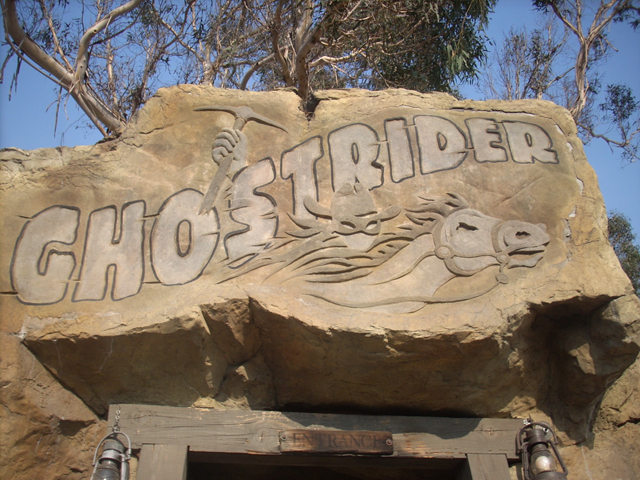

| |
Knotts Berry Farm Review

Knotts Berry Farm is definetly one of the more well known and better Cedar Fair Parks. The park has some really good coasters. Xcelerator is a fantastic coaster with one of the best launches of all time, Ghostrider and Silver Bullet, while they may not be the best of their class, they are fun rides, and they do have a Schwarzkoph Shuttle Loop, which are starting to become very rare rides. Their flat ride collection is OK, hosting a really tall S&S Drop Tower, a weak, but still good Top Scan, and other fun rides. Now the park used to have a lot more charm and atmosphere to it, but Cedar Fair stripped most of it, which is a big complaint among coaster enthusiasts. Now I like charm and all, but I still do enjoy Knotts Berry Farm, despite the destruction of charm that happened in most of the park. And lets give credit where its due. Knotts is really bringing back the charm that it stripped back. They're focusing on smaller rides, revamping old structures, and giving the park a really nice atmosphere. So if you're in Southern California, definetly give Knotts a visit. You'll have fun, and thats whats most important of all.
Rollercoasters
There is a link to a review of all the Rollercoasters at Knotts Berry Farm.
Top Coasters
Xcelerator Review

Good Coasters
Ghostrider Review

HangTime Review

Montezoomas Revenge Review
Silver Bullet Review

Family Coasters
Coast Rider Review

Jaguar Review

Pony Express Review

Sierra Sidewinder Review

Kiddy Coasters
Timberline Twister Review

Past Coasters
Boomerang Review

Flat Rides
Here are the reviews of all the Flat Rides at Knotts Berry Farm. Now Knotts used to be great in the flat ride department, as they had two awesome flat rides. Hammerhead and Tapico Tumbler, both of which are now gone. Both of these types of rides used to also be at Nickelodeon Universe, but they followed suit (The world really hates these types of flat rides). It also had a Windseeker from 2011 to 2013. Yeah, that didn't last long due to an accident and then they moved it to Worlds of Fun. Oh, and there used to be an upcharge Screaming Swing. Ok, Onto Knotts Current Flat Rides. First up, Supreme Scream. Well first off, Supreme Scream is a decent drop tower. I like it and will almost always ride it when I go to Knotts and is by far, my favorite flat ride at Knotts. However, for it's huge size, it's actually not that intimidating. True, you've got the intimidating pop at the top, but you never really get the true feeling of falling like you do on the Intamin 2nd Generation Drop Towers. But the good news, because of it's height, you get a FANTASTIC VIEW!!! You can see everything at Knotts from it. Not only that, but you can also see Tower of Terror at the Disneyland Resort from it. But that's not even the coolest thing you can see from Supreme Scream. If you sit in the right seat, have a sharp eye, and it's not too smoggy, you can see the L.A skyline and the Hollywood Sign from Supreme Scream. Now that is f*cking cool. But that's not even their best flat ride. That would be their new Top Scan, Sol Spin. These used to be extremely rare flat rides, but they apparently seem to be catching on. Which is GREAT!!! Yeah, the Top Scan here doesn't run nearly as good a program as Samauri at Lagoon. But it's still a really fun ride with some cool flipping. Their Frisbee, La Revolution is pretty mediocre, though to be fair, the program is definetly better than it used to be. While its still a lame frisbee, I've been on a worse one. The Pirate Ship there is typical, The Chairswings are typical. The Tea Cups there suck since it's hard to spin them. Ok, up next is Ok, up next is Wipeout. This is a fun little ride that provides you with some nice lateral Gs. Overall, Knotts has a semi decent flat ride collection. Not bad. Sure, you may have gotten rid of some really cool and rare flat rides, but you're still doing a good job. =)
This is Supreme Scream. Knott's Drop Tower.
 Yeah. It may not be the best Top Scan ever, but it's still really fun.
Yeah. It may not be the best Top Scan ever, but it's still really fun.
Dark Rides
Now some of you may not be expecting much since dark rides at parks that aren't of Disney Quality tend to be...average or mediocre. But nope! Not at Knotts Berry Farm. Here, the dark ride is just as good as the top dark rides at Disney Parks or any of the high quality European Parks. Yeah, Voyage to the Iron Reef may not sound like an amazing dark ride, but Knotts really did a great job with this ride and it fits in with the park perfectly. It has a unique and intersting story as Knotts Berry Farm is being flooded and attacked by these steampunk mechanic aquatic creatures that you have to shoot in order to fight and destroy the Kraken Queen. It has a ton of fun spinny action and is just a ton of fun shooting at all the stuff. Plus, I enjoy seeing all the hidden Knotts Berry Farm Easter Eggs. It's just a great dark rides and a perfect fit for Knotts Berry Farm.
Trust me. It's a great dark ride.
Water Rides
Here are the reviews of all the Water Rides at Knotts Berry Farm. While their water ride collection isn't bad, its sad cause it used to be SO MUCH BETTER!!!! Knotts used to soar with flying colors in the Water Ride Department. Why? They used have one of the greatest water rides on the face of the Earth. Perilous Plunge. Can you say ejector air? This ride was just awsome. It managed to grab the #2 spot on my Top 10 Water Rides List and you can see my raw footage of the ride here. Now there's only one ride like it left in the world. Suddenly, I want to go to Wales and visit Oakwood. But bitterness about the removal of Perilous Plunge aside, it's still a good water ride collection. Timber Mtn Log Ride is a really fun log ride with some nice theming inside and a good final drop. And it doesn't get you that wet. While it's no Splash Mtn, It's still a great log ride. And be sure to raise your hands throughout the entire ride, you'll be laughing your asses off if you do. =) But the one thing they could really benifit from is a place to soak unsuspecting fools like Six Flags Magic Mountain used to have with Log Jammer (I really wish that they kept Log Jammer). =( That would be a great way to earn money Cedar Fair. And then there's Calico Rapids. That is just a typical River Raft Ride. There arn't that many elements to it. So that ride sucks. But still, Knotts still has a decent Water Ride Collection with a good log flume and a crappy river rapids ride.
 Make sure you keep your arms raised at all times on this ride. =)
Make sure you keep your arms raised at all times on this ride. =)
Water Park
(Soak City)
Here is the review of Knotts Berry Farm's water park. Soak City. While technically not a part of Knotts Berry Farm, Soak City is just across the street and contains many different water slides. The water park is easilly noticed by its very colerful assortion of water slides. While it isn't too special, it's still a fun water park. Many of their star attractions are clones of popular water slides at other Southern California Water Parks. For instance, their biggest and best water slides is pretty much just a clone of the nearby Taboo Tower at Six Flags Hurricane Harbor (part of Six Flags Magic Mountain).
The Major Waterslides
There is a link to a review of all the Major Waterslides at Soak City.
Banzai Falls Review
Old Man Falls Review

Shore Break Review

Past Major Waterslides
Pacific Spin Review
All the Other Waterslides
Here are the reviews of all the other water slides at Soak City. All right. Let's start out with the best water slide that doesn't have its very own review yet. The Wedge. This is the parks new family raft ride. And honestly, this is a really good one. There are actually some good laterals on this ride. Yeah, you're gonna need a lot of people for it. But that's just par for the course with all the family raft rides. Nothing special here, and this was a good one. Moving onto Storm Watch. This is one of the white slide complex of some dark enclosed tube slides. It's pretty fun. Not crazy or anything super special, but it's got some nice laterals and is just an overall fun tube slide. And speaking of fun tube slides, let's move onto the next slide complex, Malibu Run. Now Malibu Run consists of 4 slides. Heavy Swell and Rimcon are the two completely enclosed slides, Dropoff is half enclosed and half open, and Wave Chaser is completely open. Dropoff is tame, but the other ones are fun. I particuarly like Heavy Swell as you get some nice laterals and speed on that one. And there's some good wall time on Wave Chaser as well. But that's the most popular one since people are apparently afraid of the dark.
 This is actually a really good family raft slide.
This is actually a really good family raft slide.
Dining
Here are the reviews of all the Resteraunts at Knotts Berry Farm. Now, the food at Knotts is really interesting. I've really found the dining selection at Knotts Berry Farm has significantly improved. In the past, all they seemed to have was typical amusement park crap. And I was annoyed simply by the prices of it. Because seriously, the prices at Knotts are f*cking expensive. Even by amusement park standards, and I'm not paying $8 to upgrade to a combo when the burger alone is $10 f*cking dollars. But they've really expanded their dining options recently, but let's just go over their classics. Berry Punch!!! It's a really good drink that I order everytime I go there. And in more good news, you can essentially make it at home. They sell the Boysenberry Concentrate in the gift shops, and it's really good. Just add water. Carbonate it and you have Boysenberry Soda (I really have to buy some of the concentrate). Oh, and if you're in that giftshop, I have to recommend the Boysenberry Tea. Seriously, that stuff is really good. Then we have to talk about their main resteraunt. This Restaurant is awsome. Hell, this resteraunt is what made Knotts Berry Farm what it is today, so that says something about the food. While you wait for your food here, you get some biscuts and jam so you don't starve to death. Once your chicken and potatoes come, then you just chow down (That is, if you get chicken and potatoes). This restaurant has a nice, quiet, and relaxing atmosphere. And finally, I like ending a good meal with a slice of Boysenberry Pie. And while that's just what I order, the restaurant has a wide variety of food and I highly recomend it to anyone going to Knotts Berry Farm. On top of that, they also have a bar where you can get Boysenberry Beer, which is really good. It's expensive as f*ck, but it's worth trying once if you live in So-Cal. They also have other Boysenberry Cocktails at the bar that I'll have to try sometime once I have enough money to justify spending on expensive Boysenberry Booze at Knotts Berry Farm. There's the Boardwalk BBQ that just opened up. And while it is very expensive, it's actually pretty good theme park food. And finally, we have to talk about the Boysenberry Festival. It's a festival they have for two weeks in April, and they have so much good food for it. Some classics include Boysenberry Wings, Boysenberry Meatballs, Boysenberry Cream Soda, Boysenberry Trifle, Boysenberry Frybread, and two of my favorites, the Fun Bun and Fun Stick. Seriously, these things will fill you up. And there's also other unique things at the Boysenberry Festival such as Boysenberry Pizza, Boysenberry Ravioli, and Alligator (as long as you're not from Louisiana, it's unique). The food at the Boysenberry Festival makes Knotts Berry Farm rival with parks such as Silver Dollar City and Dollywood and it really pushes Knotts Berry Farm up on the Top 10 Theme Park Dining Options List. So if you're a foodie and a roller coaster enthusiast, make sure you visit Knotts Berry Farm in April, when the Boysenberry Festival is going on. And if you live in SoCal, you have to try it at least once. The food is really really good.
 Come to the Knotts Boysenberry Festival. It's amazing and has some great food.
Come to the Knotts Boysenberry Festival. It's amazing and has some great food.
 Eat here. The food here is actually delicous, cheap, and high quality.
Eat here. The food here is actually delicous, cheap, and high quality.
Theming and Other Attractions
Here are the reviews of all the other stuff at Knotts Berry Farm. Knotts does have some decent theming in Ghost Town. But there's not that much theming anywhere else. Camp Snoopy is a decent childrens area with a decent kiddy coaster. Timberline Twister (See the Timberline Twister Review for more details). There is still some theming left in Ghost Town left from the days before Cedar Fair. Thats pretty cool to check out. And hey, they have been growing Ghost Town in recent years, going back to their old school roots. They do have the Wagon Show in Ghost Town, which while its not the best show ever, is fun to watch with some very corny lines. And they just re-did the Boardwalk and that looks really nice. So that's definetly cool.
 Howdy y'all! Come on down to Ghost Town!
Howdy y'all! Come on down to Ghost Town!
In Conclusion
Knotts is a very fun park to visit with some good rollercoasters, good food, and a great water ride. Yeah, there's not as much charm as there once was, but I still find Knotts to be a really fun theme park. Defiently give it a visit if you're in the L.A Area.
Enthusiast FAQs.
*Are there kiddy coaster restrictions? - Yes, There's a maximum height limit of 69 inches. Anyone below that is good. Anyone above is screwed in getting the credit.

Tips
*The back of the park is usually empty during the morning. So, If you're going on a busy day and want lots of rides on Xcelerator, get there in the morning!!! (Ghostrider and Silver Bullet have lines all day).
*If you want to avoid crowds all together, Go during a weekday in October. Not during Knotts Scary Farm, but just there during the day. NO ONE is there.
*For Ghostrider, GET THE BACK!!!!!
*Raise your hands while riding Timber Mtn Log Ride.
*If the last time you went to Knotts was in 1997 or earlier, be prepared to see some major changes.
*Have Fun!!!
Theme Park Category:
Amusement Park
Location
Buena Park, California, USA
Last Day Visited
September 26, 2021
Video
My official Knotts Berry Farm Video
Complete Update List
2021
Taste of Boysenberry Festival 2021
2020
The 2020 Update
2019
Fall 2019 Photos
Knotts Summer 2019
Knotts Boysenberry Festival 2019
2018
Knotts Summer 2018
HangTime Opening Day
Knotts Boysenberry Festival 2018
2017
Fall 2017 Photos
Knotts Summer 2017
Knotts Boysenberry Festival 2017
2016
Incrediblecoasters Winter 2016
Knotts Summer 2016
Knotts Boysenberry Festival 2016
2015
West Coast Bash 2015
Voyage to the Iron Reef Media Day
Knotts Boysenberry Festival 2015
2014
Knotts New Years Eve 2014
2013
West Coast Bash 2013
Knotts Summer 2013
2012
Knotts Summer 2012
Incrediblecoasters Christmas & New Years 2011/2012
2011
Knotts Summer 2011
Incrediblecoasters New Years
2009
Fall 2009 Photos
Spring 2009 Photos
2008
Knotts Summer 2008
Knotts Spring 2008
2007
Fall 2007 Photos
Knotts Summer 2007
2006
Fall 2006 Photos
Because I feel like it Knotts
DC/Williamsberg/Knotts
2005
Fall 2005 Photos
Silver Bullet Media Day
2004
General Park Photos
Here's a link to the parks website.
Home
|